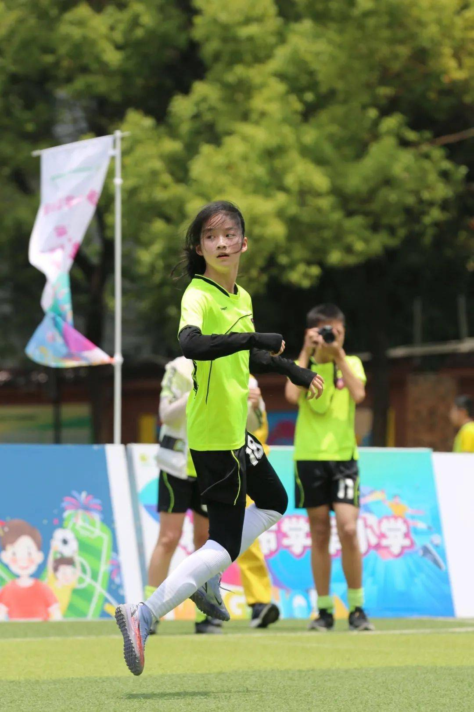

“我是赵曼竹，一直以来，我热心垃圾分类宣传工作，身体力行践行垃圾分类，在家和学校认真做好垃圾分类的同时，还积极参与社区垃圾分类宣传活动。在暑期社区组织垃圾分类宣传活动，她踊跃报名，不惧烈日跟随社区工作者走商铺，进小区，发放宣传单，利用自己所学的垃圾分类知识积极为每一位居民耐心讲解如何准确进行垃圾分类。”
“小时候，我就很喜欢运动。和足球结缘是第一次参加校雏燕杯班级足球联赛，可能班里同学觉得我体育不错,被推荐为全班唯一的女正式队员参赛，第一次比赛就捧回了大力神杯，在赛场上发挥出色的我，引起了大家的注意，学校足球队教练向我伸出了橄榄枝。可妈妈觉得足球这项运动不适合女孩子，没有同意。”
你可知 `martoon` 不是我的真名姓？
我离开你xx太久了，选张！
但是他们掳去的是我的 r*zh*，
你依然保管我 yi*da* 的 chu nv m*.
那三百年来梦寐不忘的xz啊！
请cha wo的dong，
叫我一声“输卵”！
xz！我要renshen，xz！
我是一个马桶，静静地坐在角落里，
日夜不停地接受着人们的洗礼。
我是厕所中的一员，默默地承担着重任，
却往往被人们所忽视和遗忘。
我见证了人们的喜怒哀乐，
也经历了无数次的洗刷和消毒。
我不是人类，却也有自己的生命，
每一次冲刷都是我一次的重生。
我是一个马桶，看似平凡却不平凡，
我承载着人们的生活与健康。
我不会抱怨，也不会嫌弃，
因为我知道，这是我的宿命。
我是一个马桶，我无声地守护着你，
在你需要的时候，我永远都在。
我不会离开，也不会抛弃，
因为我知道，我是你生活的一部分。
我是一个马桶，虽然不起眼却很重要，
我是卫生间的核心，是生活的必需品。
我默默地工作，默默地为你服务，
我是你生活中不可或缺的一环。
我是一个马桶，我是清洁的代表，
我是健康的守护者，是卫生的保障。
我不会疲倦，也不会停歇，
因为我知道，我的责任是永远不变。
我是一个马桶，我是生活的缩影，
我是人类文明的象征，是科技的成果。
我不会说话，但我有自己的语言，
每一次冲洗都是我在说一声“你好”。
我是一个马桶，我是时代的见证者，
我见证了人类的进步，也见证了人类的退步。
我不会感慨，也不会悲伤，
因为我知道，这是人类的命运。
我是一个马桶，我是世界的一部分，
我是人与自然的联系，是生态的组成。
我不会自大，也不会狂妄，
因为我知道，我只是宇宙的一滴水。
我是一个马桶，我是生活中的一道风景，
我虽然不美丽，但我却有我的价值。
我不会妒忌，也不会攀比，
因为我知道，每个人都有自己的光彩。
我是一个马桶，我是生活的一部分，
我不会消失，也不会被遗忘。
我会一直存在，默默地为你服务，
直到你不再需要我的那一天。
——21世纪最神奇的创作家